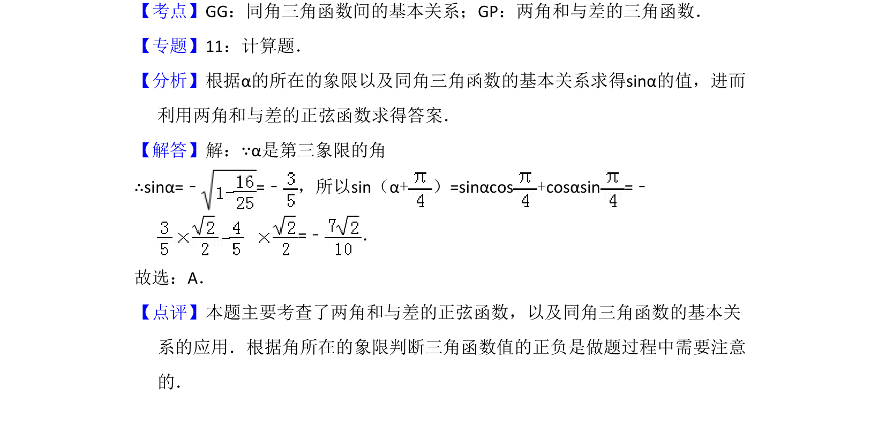

考点：同角三角函数关系 两角和的正弦公式
已知角α的余弦值及象限，求其正弦并利用两角和公式计算正弦值。

📄 原 PDF 第 7 页：
素材/真题/吉林/2008-2024·（吉林）数学高考真题/2010年高考数学试卷（文）（新课标）（解析卷）.pdf
10．（5分）若cos α=﹣ ，α是第三象限的角，则sin（α+）=（ ） A．B．C．D．
【考点】GG：同角三角函数间的基本关系；GP：两角和与差的三角函数．菁优网版权所有 【专题】11：计算题． 【分析】根据α的所在的象限以及同角三角函数的基本关系求得sinα的值，进而 利用两角和与差的正弦函数求得答案． 【解答】解：∵α是第三象限的角 ∴sinα=﹣=﹣ ，所以sin（α+）=sinαcos+cosαsin=﹣ =﹣ ． 故选：A． 【点评】本题主要考查了两角和与差的正弦函数，以及同角三角函数的基本关 系的应用．根据角所在的象限判断三角函数值的正负是做题过程中需要注意 的．